WhatsApp Lists —
Improved interactivity in WhatsApp messaging
As part of the Service & User Experience Design learning unit (by John
Praveen Ganta and Syed Gowhar Andrabi) of the Design & Identity studio,
we explored tools and methods to make the services we use, more usable,
easy, and desirable.
One project that I worked on involved an attempt at improving interactivity in WhatsApp messaging. The idea was to introduce a flavour of elevated interactivity in an attempt to provide an increased sense of convenience. We envisioned a feature that would allow users to exchange bi-directional, editable lists within WhatsApp. Bi-directionality would ensure that an item in the list that has been checked off one end shows as checked-off on the other end too.
Let's go through a scenario to understand why the aforementioned functionality might be helpful.
The following carousel contains the floor plan of the store from which I need to buy the groceries. The letters indicate the items from my mum's message as they're spread across the store.

So, what's the issue here?
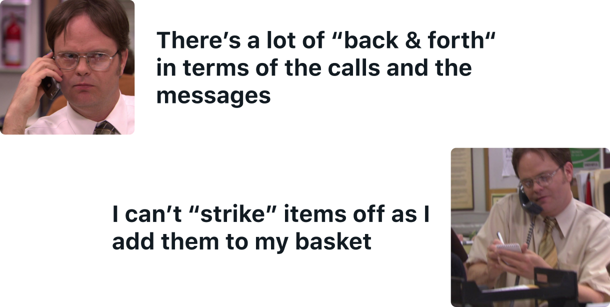
Instead ...
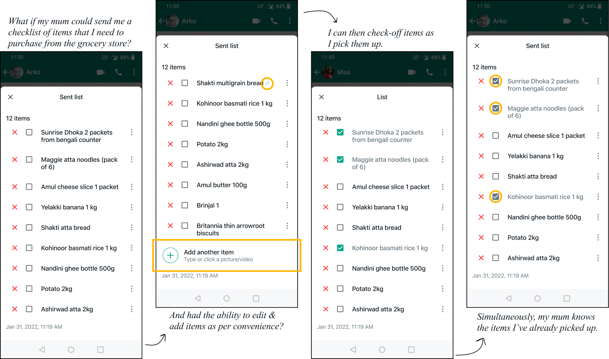
This thought was born out of a personal need, to begin with. Upon conversations with people, we gauged that others had a similar need too. Armed with this rudimentary validation, we went about brainstorming several flows based on User Stories that we had developed. User Stories are short, specific, and goal-oriented, collaborative design tools. They assume the structure of a statement with three key parts - As a {user}, I would like {to accomplish an action} {to achieve a certain goal}.
Given the short duration, we went through two rounds of iterations and feedback from very limited (and probably biased) user testing; before prototyping one flow in high-fidelity.
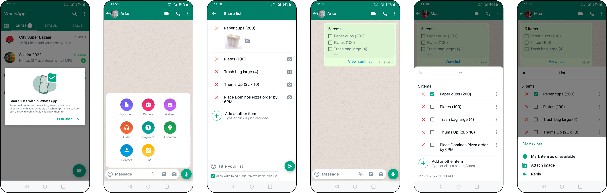
One project that I worked on involved an attempt at improving interactivity in WhatsApp messaging. The idea was to introduce a flavour of elevated interactivity in an attempt to provide an increased sense of convenience. We envisioned a feature that would allow users to exchange bi-directional, editable lists within WhatsApp. Bi-directionality would ensure that an item in the list that has been checked off one end shows as checked-off on the other end too.
Let's go through a scenario to understand why the aforementioned functionality might be helpful.
I narrate a frequently occuring event from my personal life here —
my mother requests me to buy grocery from the store, on my way
back home from work. She would send the list of items to me as a
normal WhatsApp text message. Any items that she would forget, she
would send them as separate messages (or as replies to her first
message).
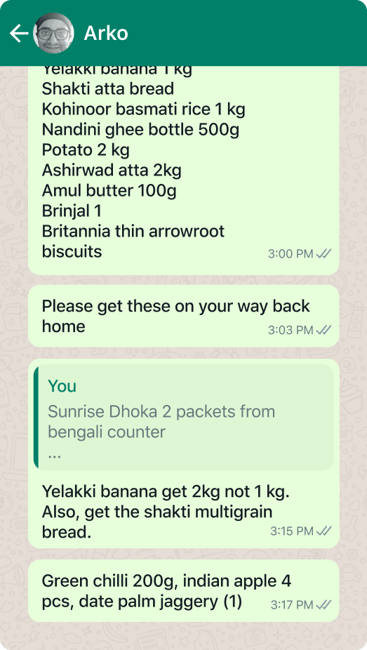
The following carousel contains the floor plan of the store from which I need to buy the groceries. The letters indicate the items from my mum's message as they're spread across the store.
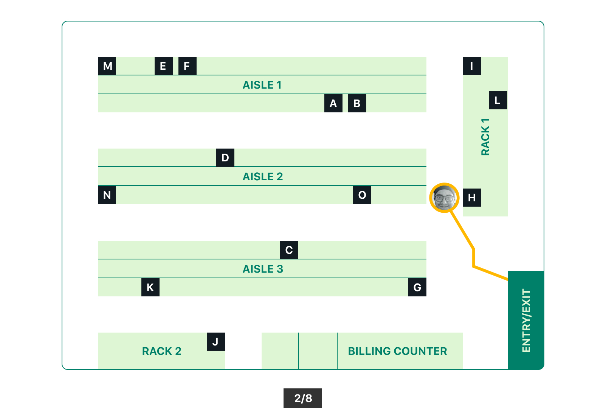
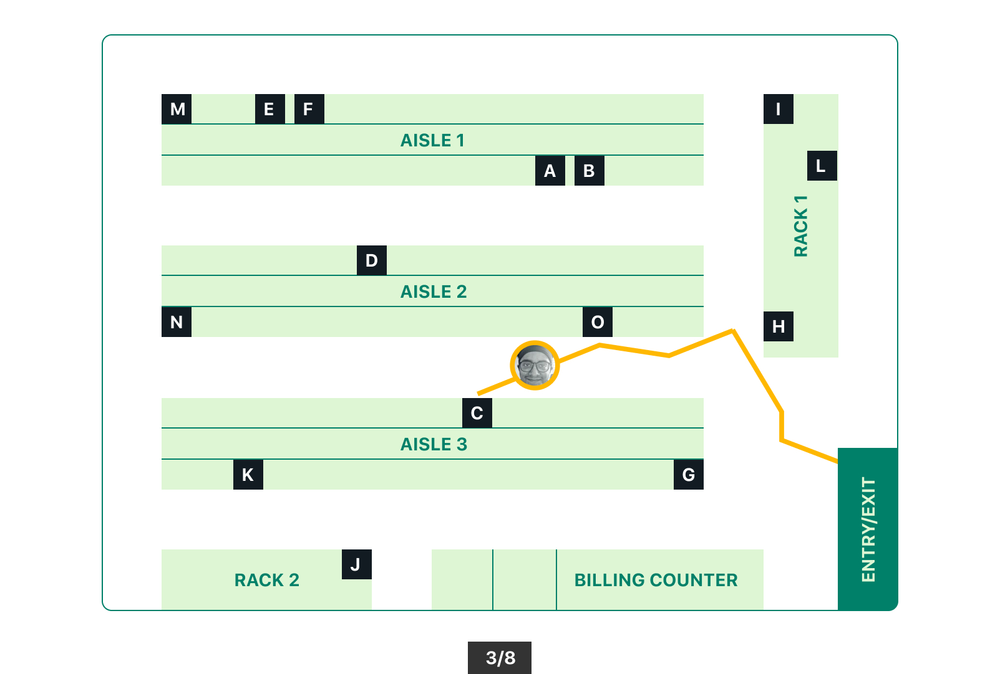
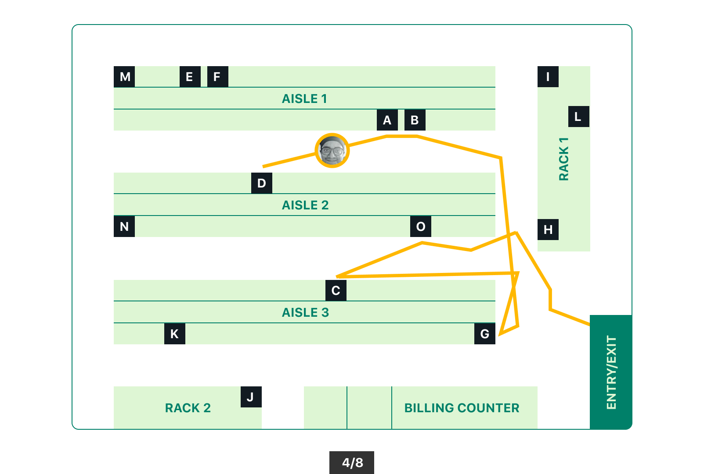
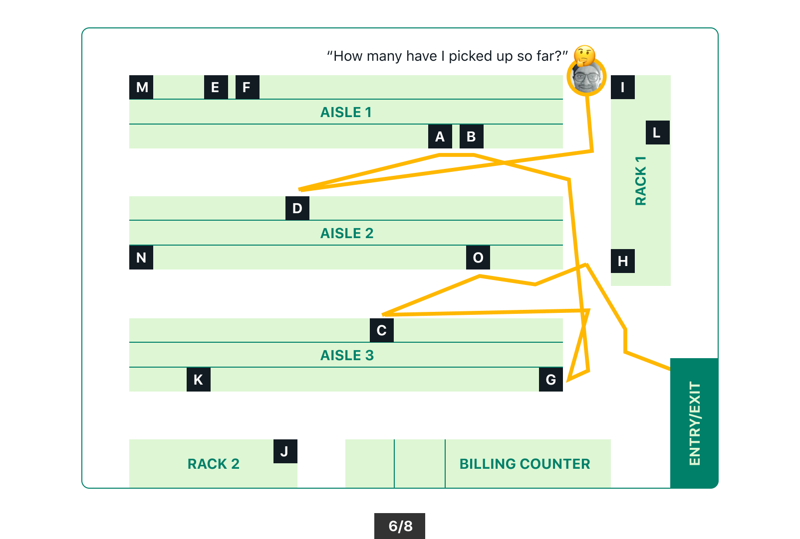
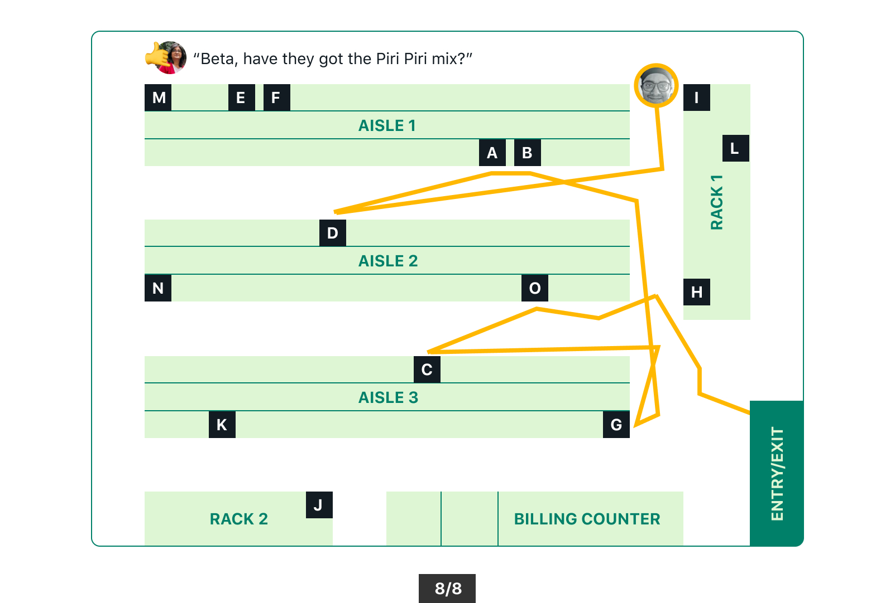
A simulation of me going around the store, picking items up.
So, what's the issue here?
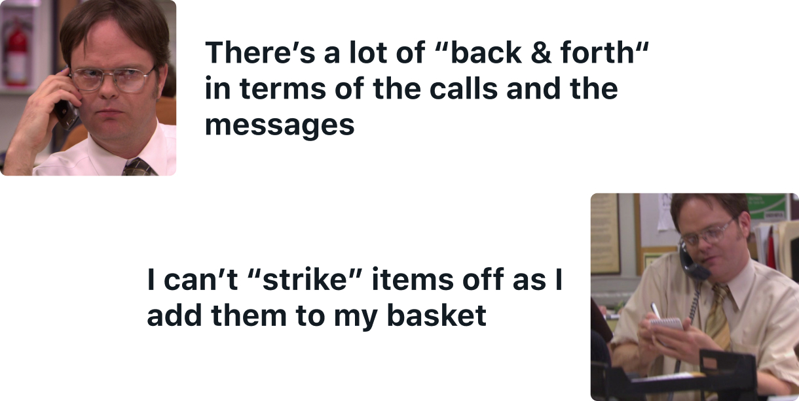
Instead ...
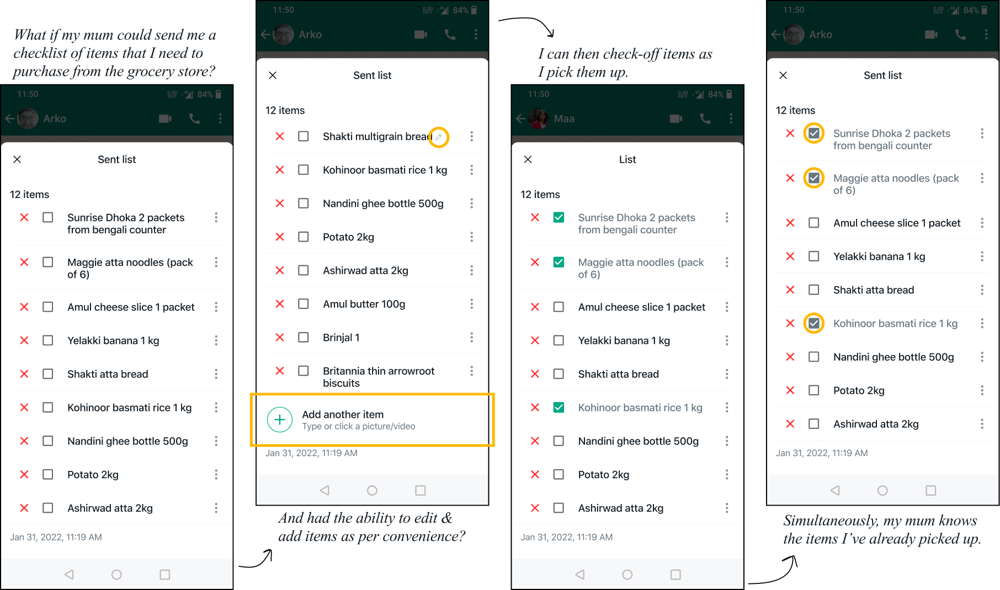
This thought was born out of a personal need, to begin with. Upon conversations with people, we gauged that others had a similar need too. Armed with this rudimentary validation, we went about brainstorming several flows based on User Stories that we had developed. User Stories are short, specific, and goal-oriented, collaborative design tools. They assume the structure of a statement with three key parts - As a {user}, I would like {to accomplish an action} {to achieve a certain goal}.
Given the short duration, we went through two rounds of iterations and feedback from very limited (and probably biased) user testing; before prototyping one flow in high-fidelity.
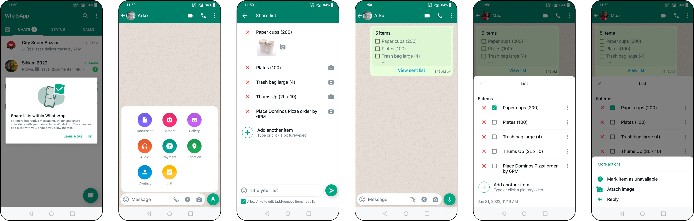
Some screenshots of what the screens will look like.